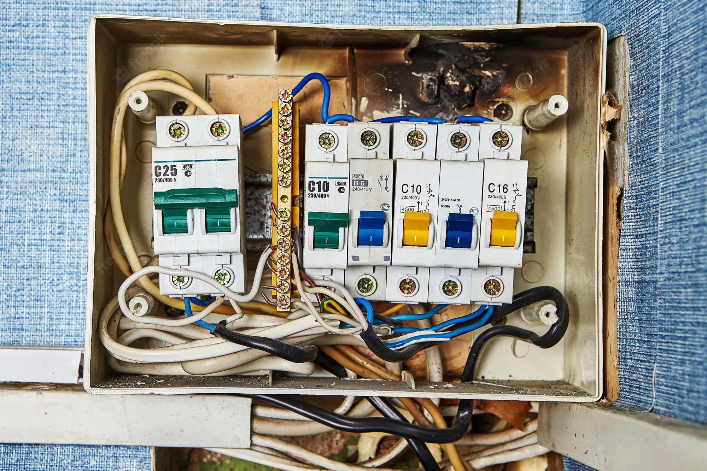
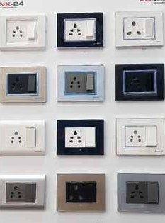

In electronics, an electronic switch is an electronic component or device that can switch an electrical circuit, interrupting the current or diverting it from one conductor to another. Electronic switches are considered binary devices because they can be on or off. When an electronic switch is on, it is considered closed in a circuit. When the switch is classified as off, the switch is open in the circuit.
An electrical switch is any device used to interrupt the flow of electrons in a circuit. Switches are essentially binary devices: they are either completely on (“closed”) or completely off (“open”).
 